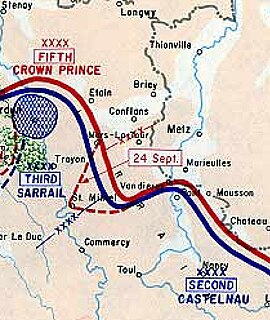

Battle of Flirey
The Battle of Flirey (French: 1re Bataille de Flirey) took place in the First World War and was fought from 19 September to 11 October 1914. The German Army defeated the French. The battle cut most of the roads and railways to the Fortified Region of Verdun (Région Fortifiée de Verdun [RFV]) and had a considerable effect on the rest of the war on the Western Front.

Map of the Battle, with the fortified city of Verdun in the top left
| Date | 19 September - 11 October 1914 |
|---|---|
| Location | Around Flirey, France |
| Result | German victory |
| Belligerents | |
| France | German Empire |
| Commanders and leaders | |
| Maurice Sarrail Noel de Castelnau |
Crown Prince Rupprecht |
| Units involved | |
| Third Army | 6th Army |